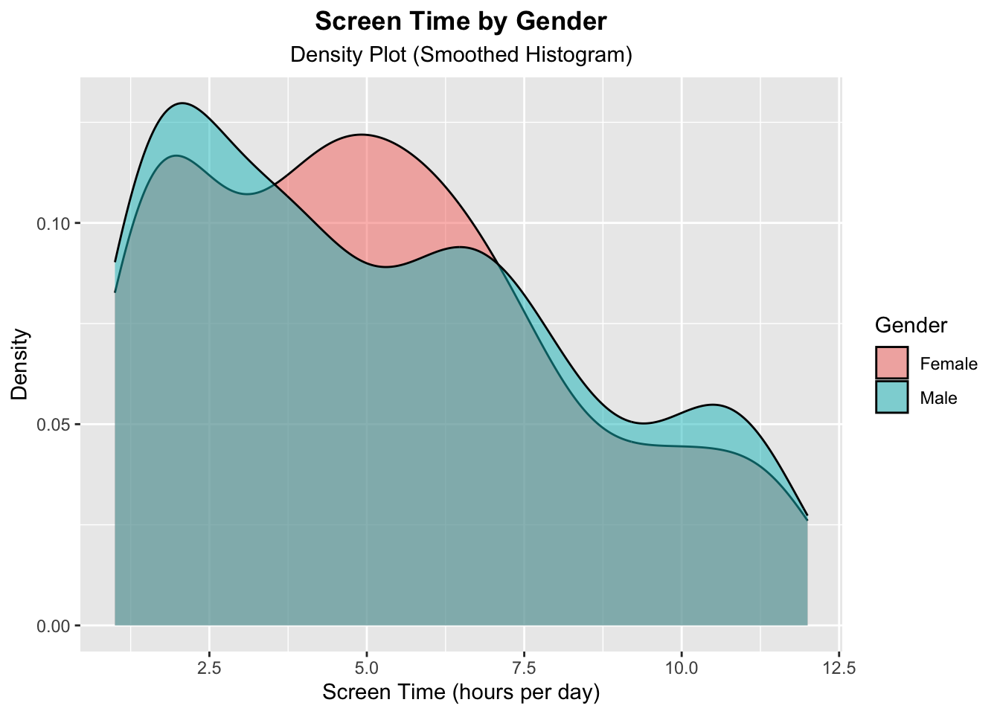

# Addition packages to download/to do from notes:
# install.packages("shinydashboard") - tabItems() - spinners, tabPanel() (37 Debug)
# install.packages(shinyalert") - verify values
# Use observeEvent() to look for changes in tab id (Flexible UI Layouts)
# r4ds examples
# Notes:
# quantitative variables (screen on time, battery drain, data usage)
# categorical variables (operating system, gender, and user behavior class)Project 2 - Shiny (Mobile Device Usage)
Introduction
As technology has progressed and become more accessible to the general public over time, it’s important to assess how mobile device usage has changed over time and how it affects us. As someone who’s interested in technology and curious about the public’s general use on mobile devices, I chose to look into the mobile device usage data set, containing 700 data points, to explore and create my application.
Preparing the app!
# Installed rsconnect to connect R Studio with Shiny deployment website.
# install.packages('rsconnect')
# install.packages("ggridges")# Authorized rsconnect package in order to deploy Shiny for R applications to shiny.io account.
rsconnect::setAccountInfo(name='tuongjohn',
token='49C8DBAA2EF1F7B5CD386A06DCF0EB97',
secret='b2XBkM4QOXdXImtie5MAsfq5iKXKdMZqTnFsy5jd')# Installed and loaded packages.
library(tidyverse)
library(ggridges) # Used for quantile lines in plots# Read in mobile device usage .csv file as a tibble. --------------------------------
mobdevdata <- as.tibble(read.csv("/Users/User/repos/Project2Tuong/user_behavior_dataset.csv", header = TRUE))
# Checked to see if there are any missing values in the data set. -------------------
print(colSums(is.na(mobdevdata))) # No missing values! User.ID Device.Model
0 0
Operating.System App.Usage.Time..min.day.
0 0
Screen.On.Time..hours.day. Battery.Drain..mAh.day.
0 0
Number.of.Apps.Installed Data.Usage..MB.day.
0 0
Age Gender
0 0
User.Behavior.Class
0 # Checked to see internal structure of mobdevdata (class of each column/how variables are stored, etc.).
str(mobdevdata)tibble [700 × 11] (S3: tbl_df/tbl/data.frame)
$ User.ID : int [1:700] 1 2 3 4 5 6 7 8 9 10 ...
$ Device.Model : chr [1:700] "Google Pixel 5" "OnePlus 9" "Xiaomi Mi 11" "Google Pixel 5" ...
$ Operating.System : chr [1:700] "Android" "Android" "Android" "Android" ...
$ App.Usage.Time..min.day. : int [1:700] 393 268 154 239 187 99 350 543 340 424 ...
$ Screen.On.Time..hours.day.: num [1:700] 6.4 4.7 4 4.8 4.3 2 7.3 11.4 7.7 6.6 ...
$ Battery.Drain..mAh.day. : int [1:700] 1872 1331 761 1676 1367 940 1802 2956 2138 1957 ...
$ Number.of.Apps.Installed : int [1:700] 67 42 32 56 58 35 66 82 75 75 ...
$ Data.Usage..MB.day. : int [1:700] 1122 944 322 871 988 564 1054 1702 1053 1301 ...
$ Age : int [1:700] 40 47 42 20 31 31 21 31 42 42 ...
$ Gender : chr [1:700] "Male" "Female" "Male" "Male" ...
$ User.Behavior.Class : int [1:700] 4 3 2 3 3 2 4 5 4 4 ...# Showed the table and cleaned up.
head(mobdevdata)# A tibble: 6 × 11
User.ID Device.Model Operating.System App.Usage.Time..min.day.
<int> <chr> <chr> <int>
1 1 Google Pixel 5 Android 393
2 2 OnePlus 9 Android 268
3 3 Xiaomi Mi 11 Android 154
4 4 Google Pixel 5 Android 239
5 5 iPhone 12 iOS 187
6 6 Google Pixel 5 Android 99
# ℹ 7 more variables: Screen.On.Time..hours.day. <dbl>,
# Battery.Drain..mAh.day. <int>, Number.of.Apps.Installed <int>,
# Data.Usage..MB.day. <int>, Age <int>, Gender <chr>,
# User.Behavior.Class <int>- Created one, two, and three way contingency tables.
# Created one, two, and three-way tables of categorical variables to explore. The tables are created with one or a combination of these three categorical variables: operating system, gender, and user behavior class. addmargins is used to find the row, column, and total sums.
# The one-way table below show that the majority of people use Android operating systems (OS) compared to iOS in this table - 554 Android users and 146 iOS users.
addmargins(table("operating system used?" = mobdevdata$Operating.System))operating system used?
Android iOS Sum
554 146 700 # The two-way table below show that Android is the more popular mobile device among both genders. For this table, there's more male Android users (292) than female users (262), showcasing males having a slight preference for Androids. iOS shows a similar distribution between genders (74 for female and 72 for male).
addmargins(table("operating system used?" = mobdevdata$Operating.System,
" gender" = mobdevdata$Gender)) gender
operating system used? Female Male Sum
Android 262 292 554
iOS 74 72 146
Sum 336 364 700# The three-way table below takes into account operating system and gender across user behavior classification (range: 1 - 5, light to extreme/heavy usage phone usage). For this table, when looking at iOS users, the distribution is fairly even between genders when looking at user behavior class... However, there's more variability across across genders when looking at Android users, especially for user behavior class 2, 3, and 5.
addmargins(table("operating system used?" = mobdevdata$Operating.System,
" gender" = mobdevdata$Gender,
"user behavior class" = mobdevdata$User.Behavior.Class)), , user behavior class = 1
gender
operating system used? Female Male Sum
Android 53 61 114
iOS 10 12 22
Sum 63 73 136
, , user behavior class = 2
gender
operating system used? Female Male Sum
Android 49 65 114
iOS 15 17 32
Sum 64 82 146
, , user behavior class = 3
gender
operating system used? Female Male Sum
Android 64 47 111
iOS 18 14 32
Sum 82 61 143
, , user behavior class = 4
gender
operating system used? Female Male Sum
Android 51 59 110
iOS 16 13 29
Sum 67 72 139
, , user behavior class = 5
gender
operating system used? Female Male Sum
Android 45 60 105
iOS 15 16 31
Sum 60 76 136
, , user behavior class = Sum
gender
operating system used? Female Male Sum
Android 262 292 554
iOS 74 72 146
Sum 336 364 700- Created numerical summaries for quantitative variables at levels of categorical variables.
# Created numerical summaries for quantitative variables (screen on time, battery drain, data usage) at levels of categorical variables (operating system, gender, and user behavior class). Here we're assigning num_summary and piping the mobdevdata data set to be grouped by the levels of the categorical variables then to summarize and provide Q1, Q3, min, max, mean, median, and standard deviation of the quantitative variables.
num_summary <- mobdevdata |>
group_by(Operating.System, Gender, User.Behavior.Class) |>
summarize(across(c(Screen.On.Time..hours.day.,
Battery.Drain..mAh.day.,
Data.Usage..MB.day.),
list(min = min,
Q1 = ~quantile(.x, probs = 0.25),
median = median,
Q3 = ~quantile(.x, probs = 0.75),
max = max,
mean = mean,
sd = sd
)))
num_summary# A tibble: 20 × 24
# Groups: Operating.System, Gender [4]
Operating.System Gender User.Behavior.Class Screen.On.Time..hours.day._min
<chr> <chr> <int> <dbl>
1 Android Female 1 1.1
2 Android Female 2 2
3 Android Female 3 4
4 Android Female 4 6
5 Android Female 5 8.4
6 Android Male 1 1
7 Android Male 2 2
8 Android Male 3 4
9 Android Male 4 6.1
10 Android Male 5 8.1
11 iOS Female 1 1
12 iOS Female 2 2
13 iOS Female 3 4
14 iOS Female 4 6
15 iOS Female 5 8.2
16 iOS Male 1 1
17 iOS Male 2 2.2
18 iOS Male 3 4
19 iOS Male 4 6.1
20 iOS Male 5 8.4
# ℹ 20 more variables: Screen.On.Time..hours.day._Q1 <dbl>,
# Screen.On.Time..hours.day._median <dbl>,
# Screen.On.Time..hours.day._Q3 <dbl>, Screen.On.Time..hours.day._max <dbl>,
# Screen.On.Time..hours.day._mean <dbl>, Screen.On.Time..hours.day._sd <dbl>,
# Battery.Drain..mAh.day._min <int>, Battery.Drain..mAh.day._Q1 <dbl>,
# Battery.Drain..mAh.day._median <dbl>, Battery.Drain..mAh.day._Q3 <dbl>,
# Battery.Drain..mAh.day._max <int>, Battery.Drain..mAh.day._mean <dbl>, …- Create at least six plots. Four must display multivariate information.
# Plot 1: Created a bar graph plot showcasing mobile device owned by operating system (Android users versus iOS users).
bar_plot1 <- ggplot(data = mobdevdata |>
drop_na(Operating.System),
aes(x = Operating.System, fill = Operating.System)) +
geom_bar() +
ggtitle("Mobile Operating Systems Used") +
theme(plot.title = element_text(hjust = 0.5, face = "bold")) +
labs(subtitle = "Bar Graph Plot",
x = "Operating System",
y = "Amount of Mobile Devices") +
theme(plot.subtitle = element_text(hjust = 0.5)) +
scale_fill_discrete("Operating System")
bar_plot1
# As seen here, majority of mobile phone users from this data set are Android users. This is interesting because I didn't think Android had so much dominance in the mobile operating system; I always though it was a little closer, maybe 60/40, Android to iOS.# Plot 2: Created a stacked bar plot showcasing the mobile device operating system usage by gender.
stacked_plot2 <- ggplot(data = mobdevdata |>
drop_na(Operating.System),
aes(x = Operating.System, fill = Gender)) +
geom_bar() +
ggtitle("Mobile Operating Systems by Gender") +
theme(plot.title = element_text(hjust = 0.5, face = "bold")) +
labs(subtitle = "Stacked Bar Plot",
x = "Operating System",
y = "Amount of Mobile Devices \n by Gender") +
theme(plot.subtitle = element_text(hjust = 0.5)) +
scale_fill_discrete("Operating System")
stacked_plot2
# As seen here, this plot visually represents operating system usage by gender. The previous plot only showed the amount of mobile device users by operating, where as this plot further breaks it down and showcases the proportion of males/females that own a phone based on whether it's an Android or iOS. While Android has more users than both female and male iOS users, respectively, the distributions between male/female within their own operating system are pretty similar, close to 50/50 by gender.# Plot 3: Created a side by side bar plot showcasing operating system usage based on user behavior class.
side_plot3 <- ggplot(data = mobdevdata |>
drop_na(User.Behavior.Class),
aes(x = User.Behavior.Class, fill = Operating.System)) +
geom_bar(position = "dodge") +
ggtitle(label = "Mobile Operating Systems by User Behavior Class",
subtitle = "Side-by-Side Bar Plot") +
theme(plot.title = element_text(hjust = 0.5, face = "bold"),
plot.subtitle = element_text(hjust = 0.5)) +
labs(x = "User Behavior Class \n (1 = light usage, ..., 5 = heavy usage)",
y = "Amount of Mobile Devices \n by Operating System") +
scale_fill_discrete("Operating System")
side_plot3
# As seen here, this side-by-side bar plot visualizes user behavior based on different operating systems. Side-by-side plots can sometimes allow for easier visual comparison of the values compared to stacked bar plots. From first glance, the total amount of light to extreme users per operating system are pretty similar and close in overall proportion. Class 1, light iOS users seem to be slightly different than rest, with a little less in number compared to the other iOS users by behavior, but not by much. # Plot 4: Created a histogram to observe the frequency of daily mobile device battery drain by mobile operating system.
histogram_plot4 <- ggplot(mobdevdata |>
drop_na(Battery.Drain..mAh.day.)) +
geom_histogram(aes(x = Battery.Drain..mAh.day., fill = Operating.System),
binwidth = 500, alpha = .75, position = "identity") +
ggtitle(label = "Battery Drain by Operating System",
subtitle = "Histogram Plot") +
theme(plot.title = element_text(hjust = 0.5, face = "bold"),
plot.subtitle = element_text(hjust = 0.5)) +
labs(x = "Daily Battery Drain (by mAh)",
y = "Frequency") +
scale_fill_discrete("Operating System")
histogram_plot4
# As seen below, this histogram shows the frequency/count at which the amount of battery mAh of phones are drained based on operating system. Unlike a stacked bar graph which compares two categorical variables and visually represents the length/proportion of the total bar, histograms showcase a distribution of continuous data/is a graphical representation of quantitative data. So when looking at this plot below, roughly 150 daily Android users and about 30-35 iOS users will drain their phone battery by 240 to 750 mAh everyday. As for those who drain their battery by an average of 3000 mAh (between 2750 and 3250) every day, that number is much less at about 47 Android users and about 17 iOS users. When comparing the frequencies across both operating systems, both OS's seem to have a very similar visual pattern of battery drain proportionally based on mAh from 750 mAh to 2750 mAh.# Plot 5: Created a density plot (smoothed histogram) to observe screen time per day based on gender.
density_plot5 <- ggplot(mobdevdata |>
drop_na(Screen.On.Time..hours.day.), aes(x = Screen.On.Time..hours.day., fill = Gender)) +
geom_density(alpha = 0.5) +
ggtitle(label = "Screen Time by Gender",
subtitle = "Density Plot (Smoothed Histogram)") +
theme(plot.title = element_text(hjust = 0.5, face = "bold"),
plot.subtitle = element_text(hjust = 0.5)) +
labs(x = "Screen Time (hours per day)",
y = "Density") +
scale_fill_discrete("Gender")
density_plot5# Below is a density plot, a smooth curve that shows the distribution of the data. Similar to histograms except with an added curve on top, the curve represents the proportion of the data in the ranges rather than the frequency/counts like a histogram would. The x-axis showcases screen time per day and the y-axis represents the density, meaning the probability/how probable the different intervals for screen time are for each gender. Looking at this plot, we can see that males have higher screen times overall; however, females do seem to have a peak average of more screen time when hitting 3 hour and 25 minute mark to about the 7 hour and 25 minute mark. Interesting - I wonder why that might be the case.# Plot 6: Created a scatter plot to observe correlations between screen time and data usage by operating system.
scatter_plot6 <- ggplot(mobdevdata,
aes(x = Screen.On.Time..hours.day., y = Data.Usage..MB.day., color = Operating.System)) +
geom_jitter(width = 0.2, alpha = 0.6) +
ggtitle(label = "Screen Time and Data Usage \n by Operating System",
subtitle = "Scatter Plot") +
theme(plot.title = element_text(hjust = 0.5, face = "bold"),
plot.subtitle = element_text(hjust = 0.5)) +
labs(x = "Screen Time (hours per day)",
y = "Data Usage \n (megabytes per day)") +
scale_fill_discrete("Operating System")
scatter_plot6# Below is a scatter plot between screen time and data usage by operating system; this is used in order to observe and determine if there may be a relationship between these variables. The plot shows a positive, strong correlation between screen time and data usage for both Android and iOS. As screen time increases, data usage also increases.# Plot 7: Used previous scatter plot while faceting with gender.
facet_plot7 <- ggplot(mobdevdata,
aes(x = Screen.On.Time..hours.day., y = Data.Usage..MB.day., color = Operating.System)) +
geom_jitter(width = 0.2, alpha = 0.35) +
ggtitle(label = "Screen Time and Data Usage \n by Operating System with Gender Facet",
subtitle = "Scatter Plot with Facet") +
theme(plot.title = element_text(hjust = 0.5, face = "bold"),
plot.subtitle = element_text(hjust = 0.5)) +
labs(x = "Screen Time (hours per day)",
y = "Data Usage \n (megabytes per day)") +
facet_grid(Gender ~ Operating.System)
facet_plot7# Below, is the previous plot except faceted with gender. First we check and take the correlation between screen time and data usage based on operating system and now we've further subset the data to take gender into account as well. From here we can see that there is a strong, positive correlation between screen time and data usage, even when taking operating system and gender into account. As mentioned before, the main difference is that there are more Android users than iOS users, otherwise they are similar in many aspects - strong, positive correlation with majority of the data points for both operating systems falling between 1 to 2.5 hours of screen time per day.# Plot 8: Created a ridgeline plot to visualize changes in distributions of data usage and operating system.
quantile_plot8 <- ggplot(mobdevdata,
aes(x = Data.Usage..MB.day., y = Operating.System, fill = factor(stat(quantile)))) +
stat_density_ridges(
geom = "density_ridges_gradient", calc_ecdf = TRUE,
quantiles = 4, quantile_lines =) +
ggtitle(label = "Changes of Data Usage and Operating System",
subtitle = "Ridgeline Plot") +
theme(plot.title = element_text(hjust = 0.5, face = "bold"),
plot.subtitle = element_text(hjust = 0.5)) +
scale_fill_viridis_d(name = "Quartiles")
quantile_plot8# Using stat_density_ridges from the ggridges package, I've created a plot that visualizes data usage based on amount of mobile devices per operating system. For example, the peak for both mountain ranges on data usage is around 380 to 430 megabytes used per day. After that peak, the amount of users for both operating systems decrease after that. Additionally, this ridgeline plot produces three lines, indicating the quartiles. In this case we have 3 quartiles: 1st, 2nd (the median), and the 3rd. Ridgeplot are a nice way to visualize changes in distribution over time or space.# Plot 9: Created a bubble plot to look at battery drain, data usage, and number of apps installed across user behavior class.
bubble_plot9 <- ggplot(mobdevdata,
aes(x = Battery.Drain..mAh.day., y = Data.Usage..MB.day.,
size = Number.of.Apps.Installed, color = User.Behavior.Class)) +
geom_point(alpha = 0.25) +
ggtitle(label = "Relationship between Battery Drain, Data Usage, and \n Number of Apps Installed across User Behavior Class",
subtitle = "Bubble Plot") +
theme(plot.title = element_text(hjust = 0.5, face = "bold"),
plot.subtitle = element_text(hjust = 0.5)) +
labs(x = "Battery Drain (mAh per day)",
y = "Data Usage \n (megabytes per day)")
bubble_plot9
# A bubble plot, an extension of the scatter plot, is used to look at relationships between three numeric variables, minimally. It in the variables, x, y, and size, battery drain, data usage, and number of apps installed, respectively. Here, the relationship between battery drain (x) and data usage (y) of number of apps installed is represented. I've also added a fourth variable, user behavior class, which is denoted by the color. Mobile device usage is an interesting topic to say the least. Due to the universal and widespread usage of mobile devices, there will always be research conducted to see how our lives are affected by these devices, especially regarding things like how much time we spend on these devices, how battery drain varies based on operating system, if data usage differs based on gender, etc… and from there we may further research on how these different variables may affect our mental/physical health and whatnot. While technology and mobile devices will continue to be an intergral part of our lives, it’s important that we do our due diligence and be mindful about our own mobile device usage to ensure it doesn’t negatively impact our lives.